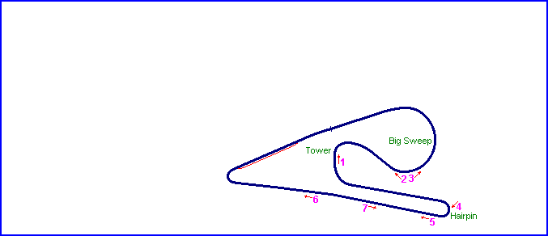
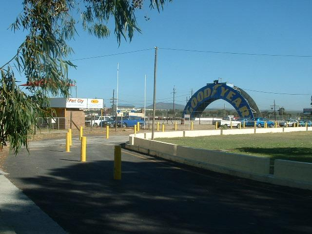
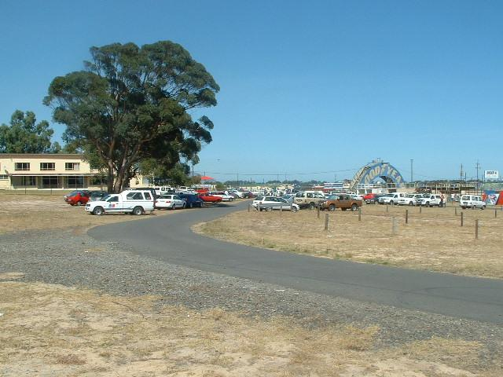
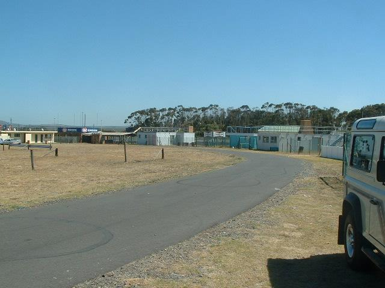
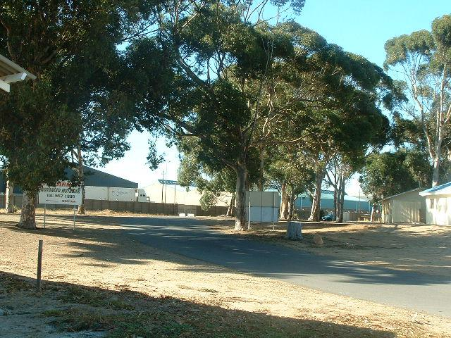
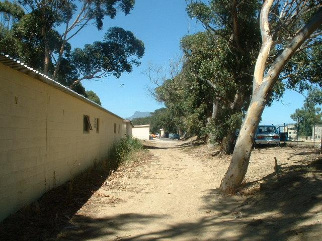
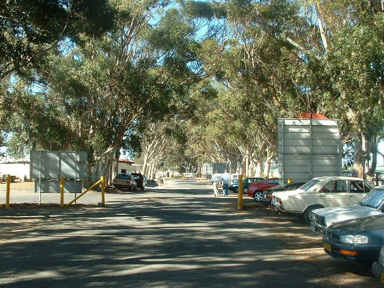
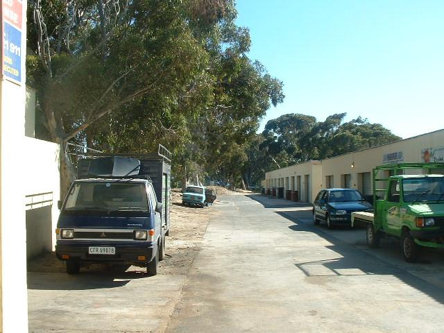

Killarney - Original Circuit
|| Contents | Original circuit photos | Present circuit photos || Home ||

Numbers on the map represent the location of where the pictures were taken.
Return to racingcircuits.net's Photo Archive Main Index

1) Clubhouse enclosure is situated to the right. Original circuit circumnavigates this
area and now forms part of an access road to the infield area.

2) Entrance to old Big Sweep and looking back towards Tower Bend. Clubhouse on the left.

3) Big Sweep section.

4) Old Hairpin.

5) Old circuit ran between the Blue gum trees. Buildings to the left were built on
ex-circuit and now function as garages/workshops for competitors.

6) Original section of circuit that was also used to host the first sprint events in 1947.
It functions today as the main access road to the circuit and runs parallel with the
Killarney Straight of the present circuit.

7) Section of the old circuit that formed part of the back straight.
Text & Graphics ©Marius Matthee. Reproduced here with kind permission.